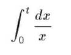

Ponto de verificação 3.1
Sempre que existir uma linguagem de marcação apropriada, utilizar marcações em vez de imagens para transmitir informações.
No caso de equações matemáticas use MathML para sua construção e folhas de estilo para formatar o texto e controlar o layout. Evite também usar imagens para representar texto, prefira folhas de estilo.

A notação MathML para esta equação é:
<semantics> <mrow>
<msubsup>
<mo>?</mo> <mn>0</mn> <mi>t</mi> </msubsup> <mfrac>
<mrow>
<mo>d</mo> <mi>x</mi> </mrow> <mi>x</mi> </mfrac> </mrow>
<annotation-xml encoding=”MathML-Content”> <apply>
<int/>
<bvar><ci>x</ci></bvar>
<lowlimit><cn>0</cn></lowlimit>
<uplimit><ci>t</ci></uplimit>
<apply>
<divide/> <cn>1</cn> <ci>x</ci> </apply> </apply>
</annotation-xml> </semantics>
Existem programas que convertem para este formato. Maiores informações em: http://www.w3.org/TR/REC-MathML/